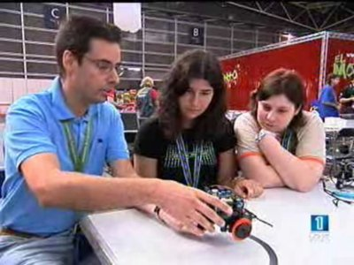

He creado una página donde he recopilado todas las apariciones en medios de comunicación. Me ha hecho mucha gracia recordar el artículo que apareció en el ABC de informática en 1998 😉 ¡cómo pasa el tiempo!
La idea de hacer esta recopilación la he tomado de Alejandro Alonso. Aprovechando que ahora me tengo que acreditar, he puesto en marcha el escaner y he digitalizado los artículos en los que hacen referencia a mi trabajo.